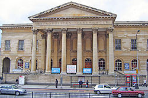
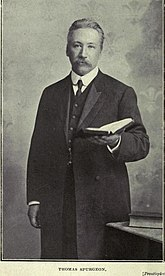

Charles Haddon Spurgeon, referido como C. H. Spurgeon, foi um pregador batista calvinista britânico.
Converteu-se ao cristianismo em 6 de janeiro de 1850, aos quinze
anos de idade. Aos dezesseis, pregou seu primeiro sermão; no ano seguinte tornou-se pastor de uma igreja batista
em
Waterbeach, Condado de Cambridgeshire (Inglaterra). Em 1854, Spurgeon, então com vinte anos, foi chamado para
ser pastor
da capela batista de New Park Street, Londres, que mais tarde viria a chamar-se Tabernáculo Metropolitano,
transferindo-se para novo prédio. Desde o início do ministério, seu talento para a exposição dos textos bíblicos
foi
considerado extraordinário. Sua excelência na pregação das Escrituras Bíblicas lhe renderam o título de O
Príncipe dos
Pregadores e O Último dos Puritanos.
História
Charles Spurgeon
C. H. Spurgeon nasceu em Kelvedon, no condado de Essex, na Inglaterra, no dia 19 de junho de 1834. Passou sua
infância e
início da adolescência em Stambourne, Colchester e Newmarket. Com 15 anos de idade se converteu ao cristianismo
e fez
sua primeira pregação. Em 1851 aceitou seu primeiro pastorado, na Capela Batista de Waterbeach.
Em pouco tempo a capela atraiu um grande número de membros, o que chamou a atenção de New Park Street, a maior
Igreja
Batista de Londres. Em 1853, após um breve período de estágio, mudou-se para Londres e tornou-se o novo pastor
da
igreja, que foi sendo ampliada para comportar o grande número de admiradores.
Publicou "Palestras aos Meus Alunos" (1840). A partir de 1855, passou a publicar um sermão a cada semana. Todos
os anos,
esses sermões eram reeditados em livros, entre eles, “The New Park Street Púlpito”. Em 1869 publicou “Tesouro de
Davi".
Escreveu obras polêmicas como os sermões “Regeneração Batistal” e os artigos “Baixo Grau”, opondo-se a alguns
ensinamentos anglicanos. Em 1887 demitiu-se da União Batista.
Em 07 de julho de 1891, C. H. Spurgeon pregou seu último sermão no Metropolitan Tabernacle. Faleceu em Nenton,
na
França, no dia 31 de janeiro de 1892
Fotos

James Spurgeon,
avô de Charles

Thomas Spurgeon, filho de Charles, que sucedeu seu pai no pastorado do Tabernáculo